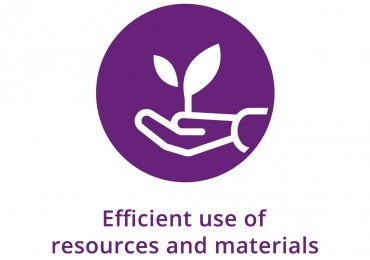
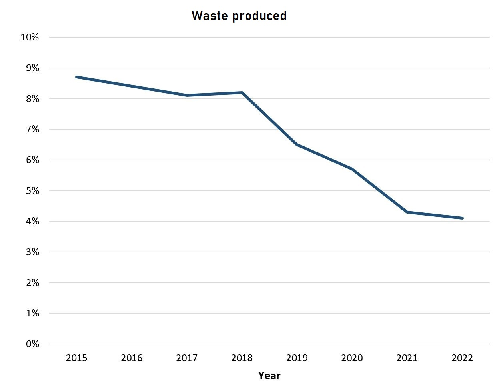
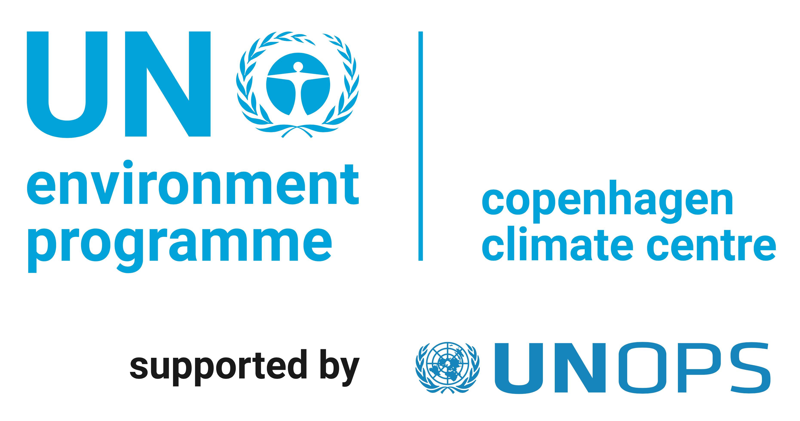
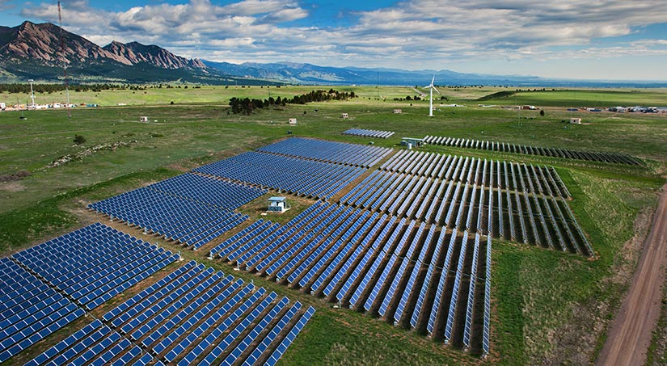

Ensure sustainable consumption and production patterns.
Efficient Resource Use: Mexico has implemented various strategies to optimize natural resource use, including promoting sustainable agriculture, water conservation, and energy efficiency in industries.
Reducing Environmental Impact: Initiatives in Mexico focus on reducing the environmental impact of production processes through the adoption of eco-friendly technologies and practices. Notable achievements include a 20% reduction in carbon emissions since 2010.
Sustainable Supply Chains: Mexico encourages businesses to adopt sustainable practices in their supply chains through government incentives and certifications. Ethical sourcing and fair trade initiatives are also promoted.
Statistics: Mexico has achieved a 30% reduction in overall waste production since 2015. Approximately 60% of businesses in the country have embraced sustainable production practices.
Initiatives: A prominent initiative in Mexico is the "Green Production Program," supporting businesses in adopting eco-friendly practices. Additionally, the "Zero Waste Campaign" aims to minimize landfill waste through recycling and waste reduction measures.
Renewable Energy Integration: The country is making strides in integrating renewable energy sources into production processes, aiming to reduce reliance on non-renewable resources and decrease carbon footprint.
 Return to Home page